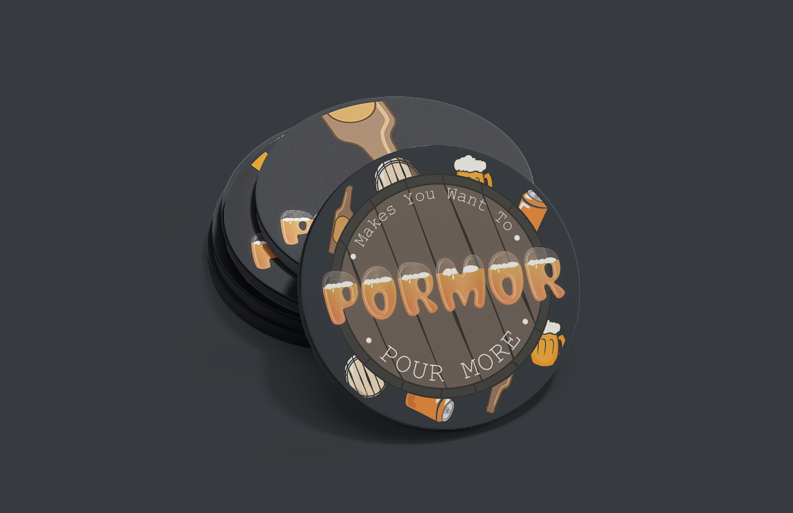
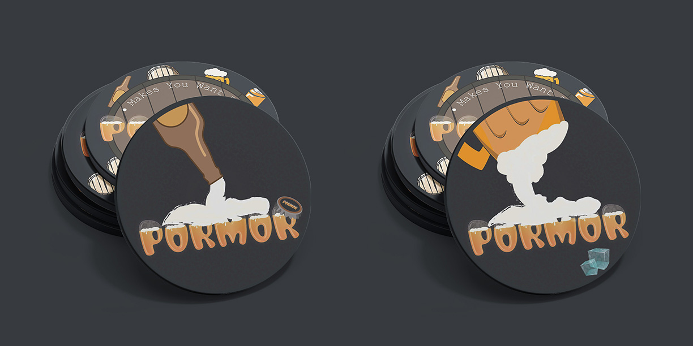
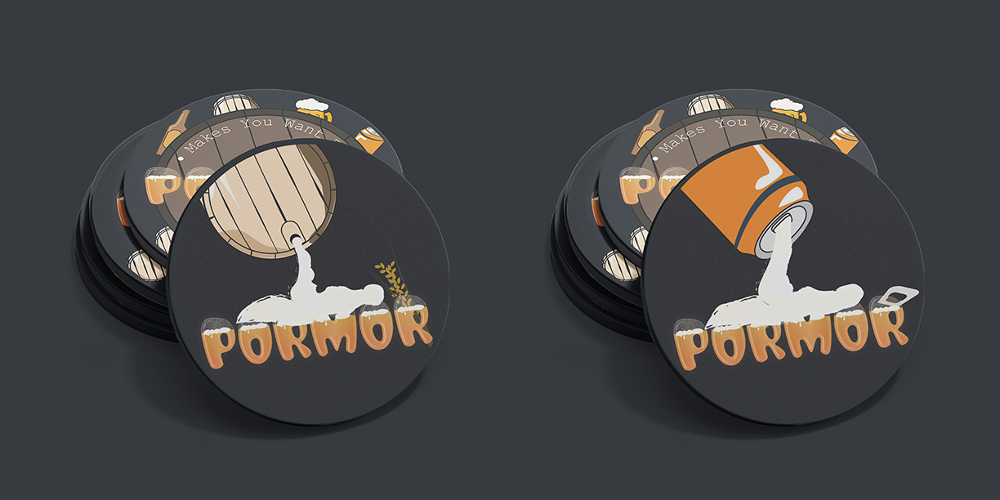

Pormor Coasters
For this project, I was tasked with designing a set of 4 coasters for a brewery, all of which share a common design for the back. I decided to dedicate each coaster to a type of beer container to compliment the brand name, Pormor, which highlights the idea that the beer is so good that you will always want more. I also designed the logo for the brand by illustrating custom typography that reminds the viewer of beer glasses.
I am particularly proud of the design I created for the back of the coasters because it perfectly compliments all four front designs and serves as a promotional piece for the brewery while also not looking like a forced advertisemnt.
Tools: Illustrator



View all projects